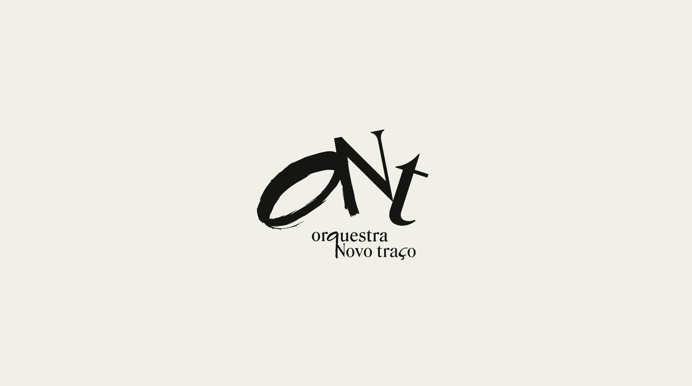
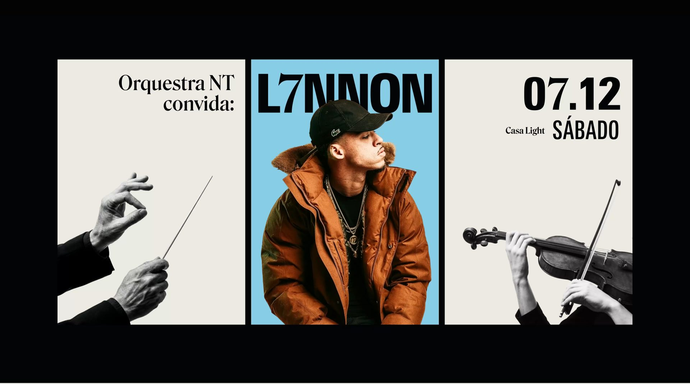
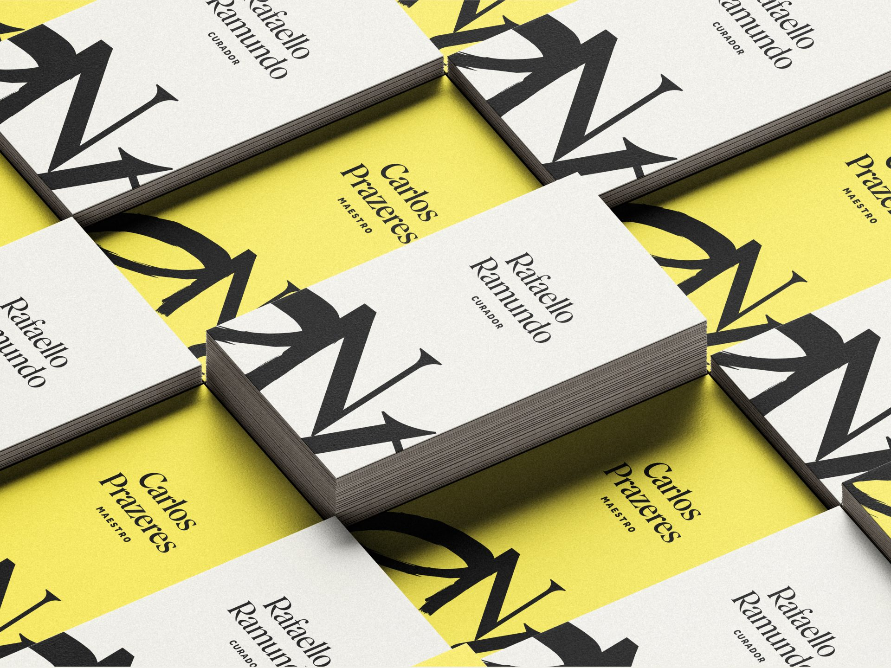
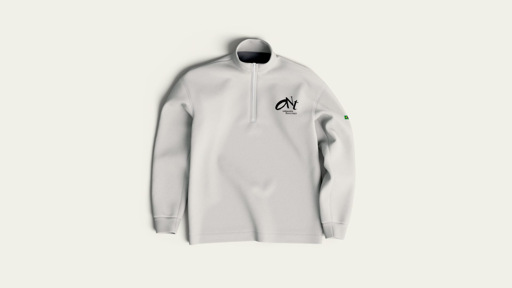
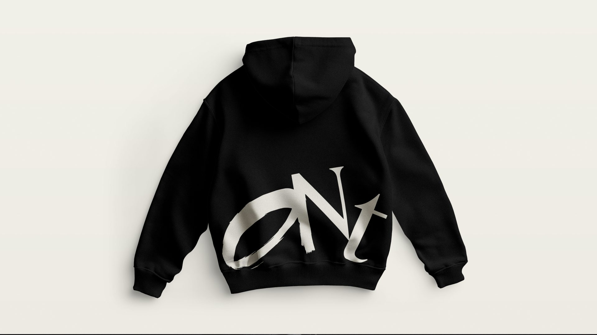
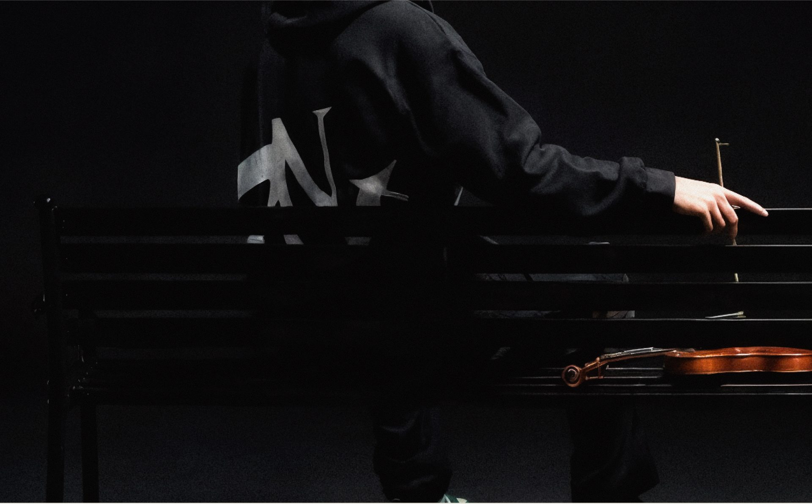

Orquestra
Novo Traço
Uma orquestra que toca com artistas da música urbana, com identidade nascida da partitura e do traço da marca-mãe.
- Cliente
- Novo Traço
- Ano
- 2025 — 2026
- Papel
- Direção de arte
- Escopo
- Símbolo, identidade visual, eventos e vestuário

Diretrizes visuais
A identidade da orquestra deriva diretamente da marca-mãe, com adaptações pontuais para o contexto. Há uma valorização maior do espaço em branco, com predominância de preto sobre fundo claro, numa leitura visual que remete a uma partitura musical: clareza, elegância e respiro.
O símbolo nasceu da observação: a equipe já chamava a orquestra de "ONT" espontaneamente, e a sigla foi adotada oficialmente. As letras se apoiam fisicamente umas nas outras, como os instrumentos de uma orquestra, em que nenhum atua isolado.





No ecossistema
A Orquestra é uma das submarcas do grupo Novo Traço. O traço feito à mão permanece como elemento central no logotipo, no símbolo e nas aplicações, o que garante a unidade com o resto do grupo e preserva o caráter autoral da marca.